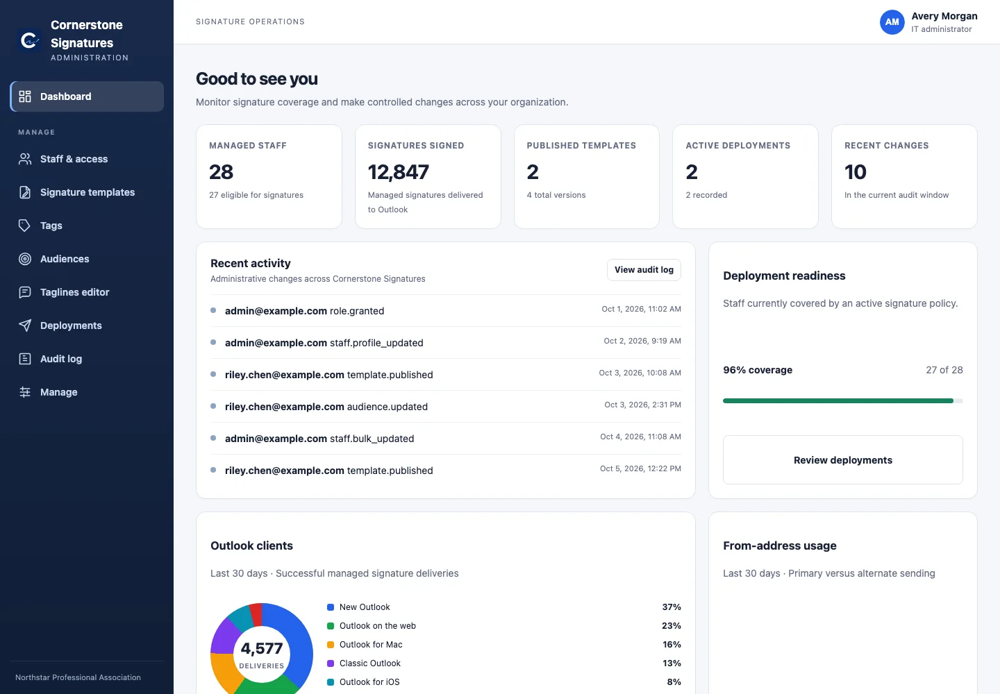
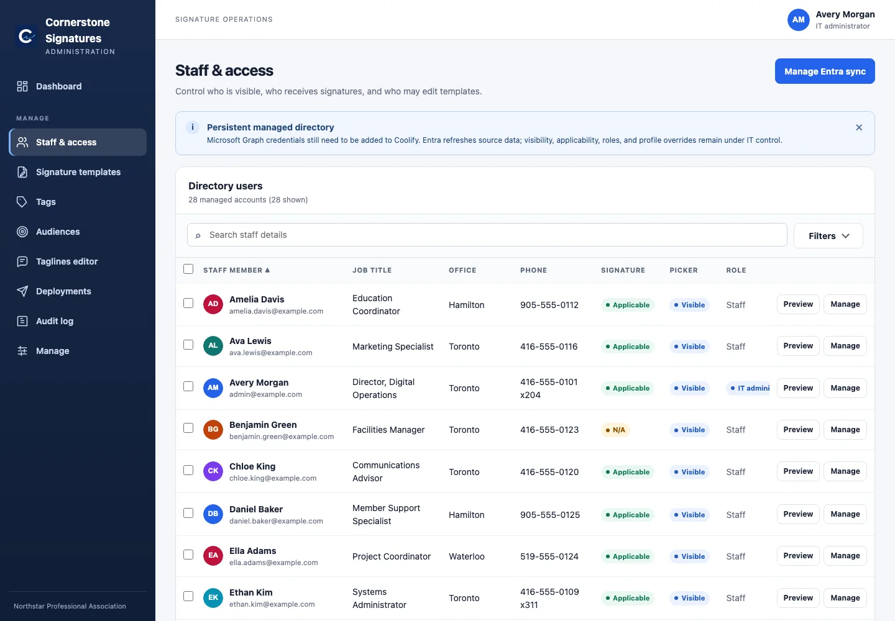
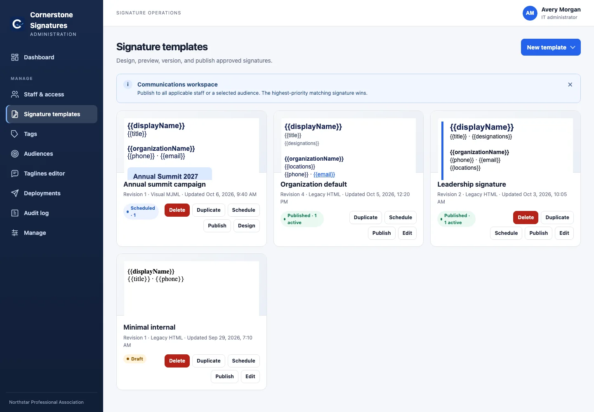
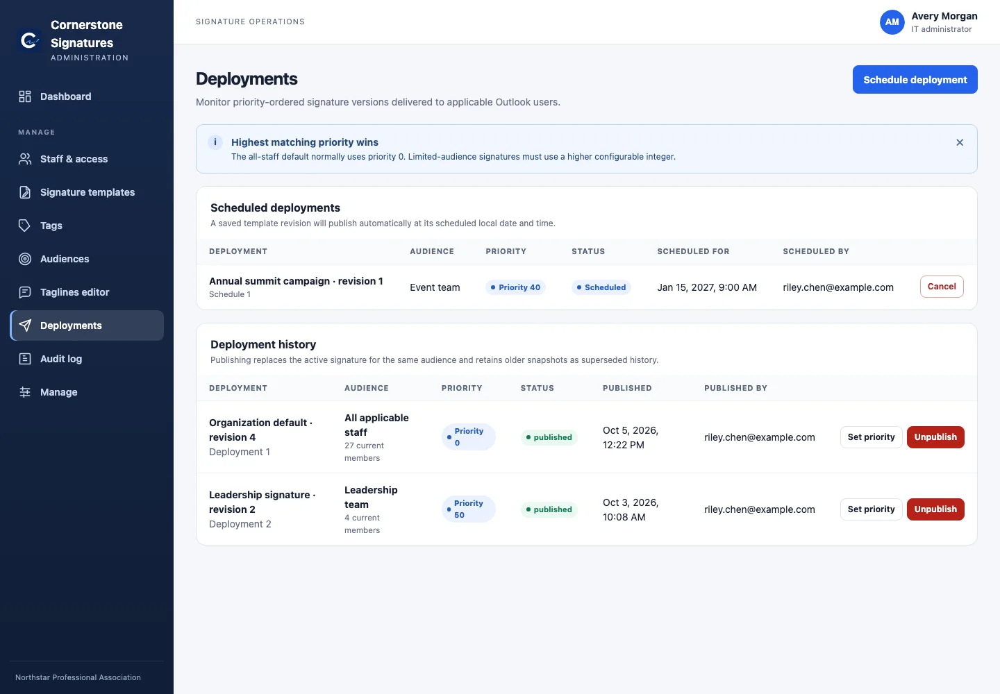
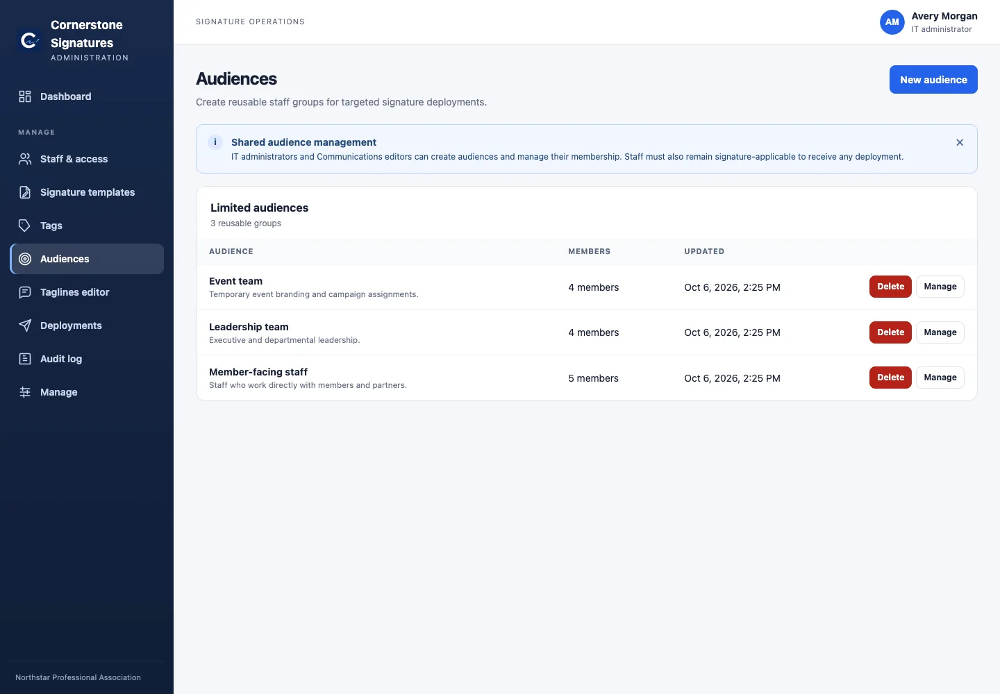
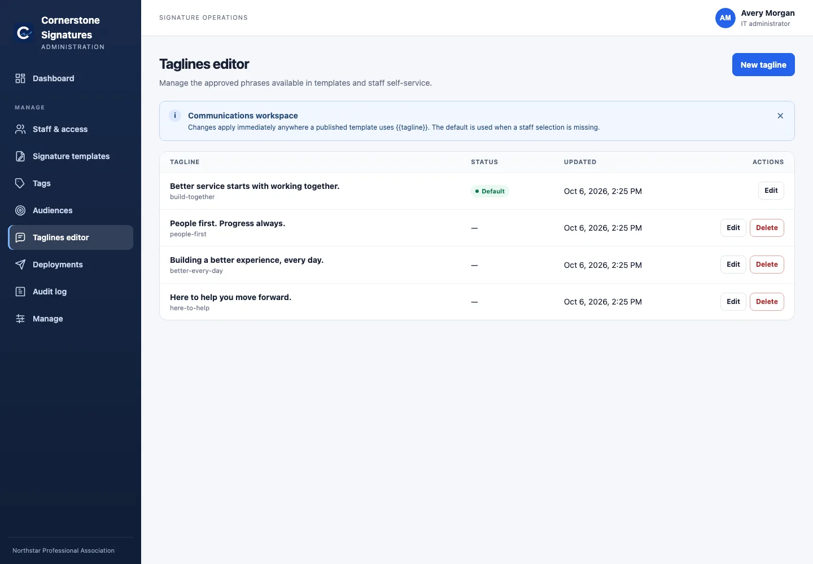
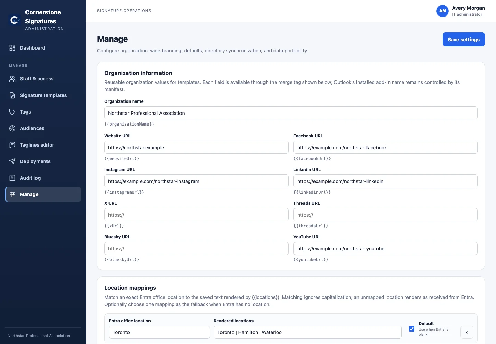
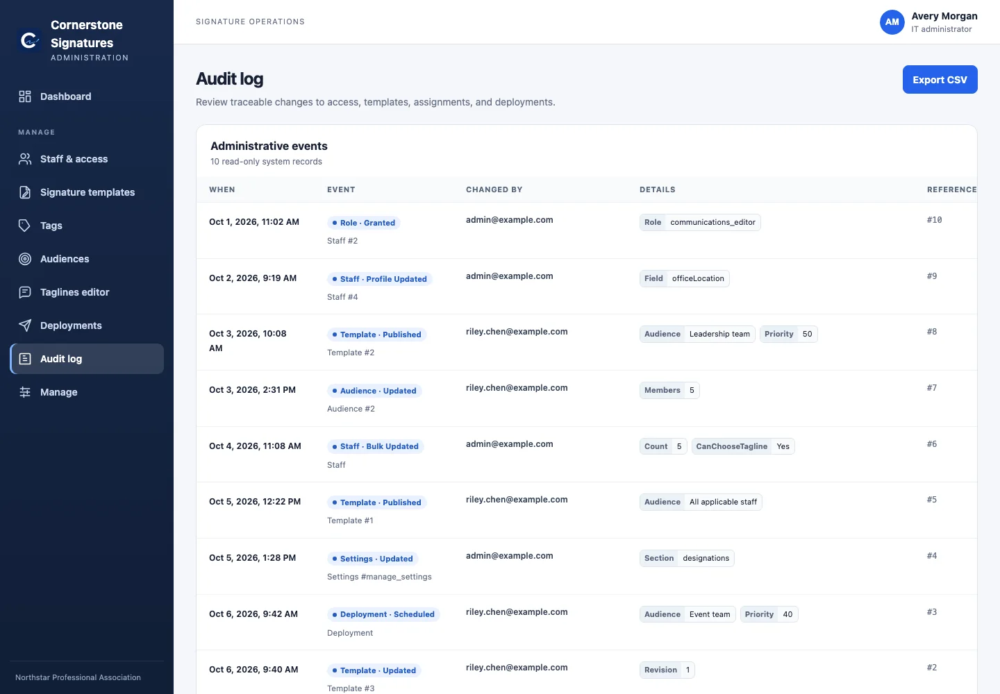
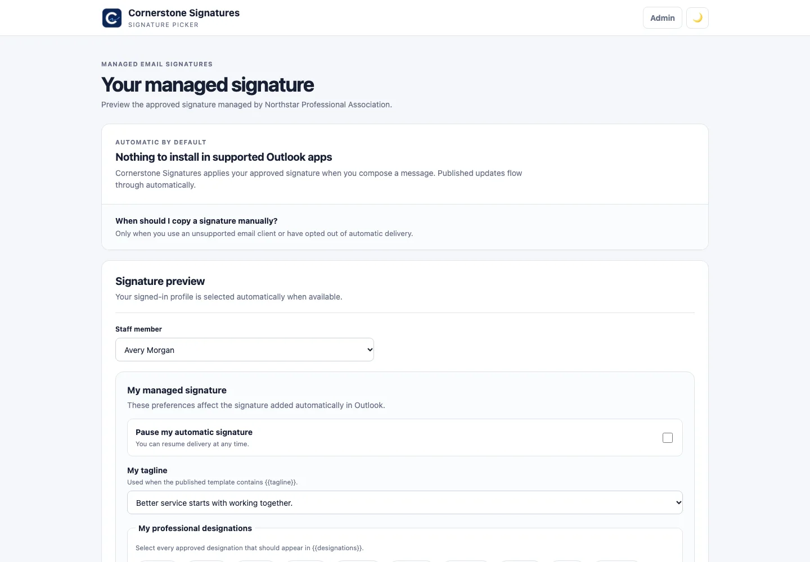

Automatic Outlook delivery
Event-based activation inserts the current managed signature on compose and responds to supported From-address changes. The task pane previews and reapplies on demand.
WebNew WindowsClassic WindowsmacOSiOSAndroid
Open-source · self-hosted · Microsoft 365
Give Communications a real publishing workspace. Give IT control of identity and access. Give every employee the right signature—automatically.

Run it in your own environment and keep directory, template, and audit data on your infrastructure.
IT governs people and policy. Communications designs and publishes without waiting on a ticket.
The Outlook add-in selects and inserts the right published signature while a message is composed.
A complete operating model
Everything between Microsoft Entra and a finished Outlook message lives in one controlled workflow.
Event-based activation inserts the current managed signature on compose and responds to supported From-address changes. The task pane previews and reapplies on demand.
Build responsive signatures in the MJML visual editor, or keep precise control with tested email-safe HTML.
Publish a default for everyone, then let higher-priority limited audiences override it without duplicating staff data.
Sync staff, shared mailboxes, profile photos, titles, locations, and phones. Filter imports and preserve local overrides.
Let selected users opt out, choose approved taglines, and add admin-defined professional designations.
Track administrative changes, client and version adoption, alternate-From usage, and complete database exports.
Prepare campaign changes in advance, schedule immutable revisions, cancel pending releases, and preserve history.
The product, not a mock-up
These screens come from a local installation populated exclusively with fictional demonstration data.
IT workspace
Coverage, publishing status, audit activity, client adoption, and shared-mailbox usage are visible without assembling reports from separate systems.

Directory control
Entra stays authoritative while IT retains safe, local control over the fields and permissions that affect signatures.
Communications workspace
Draft changes stay drafts. Publishing creates an immutable revision, while live directory data and safe merge tags remain current.


Controlled deploymentsSchedule, prioritize, publish, and roll back.
Reusable audiencesTarget once, publish repeatedly.
Approved languageTaglines managed by Communications.
Configuration that belongs in the appOrganization data, mappings, defaults, and more.
Traceable operationsEvery meaningful administrative change, ready to export.A better front door
The staff-facing page explains automatic delivery, previews the published signature, and exposes only the preferences IT has enabled for that person.

Small operational footprint
One container serves the staff page, administration workspace, Outlook runtime, signature API, and in-process schedulers. One SQLite database on a persistent volume stores managed state.
Explore the deployment architectureNo per-user tax
Deploy it, shape it around your organization, and keep the source available to the people who depend on it.